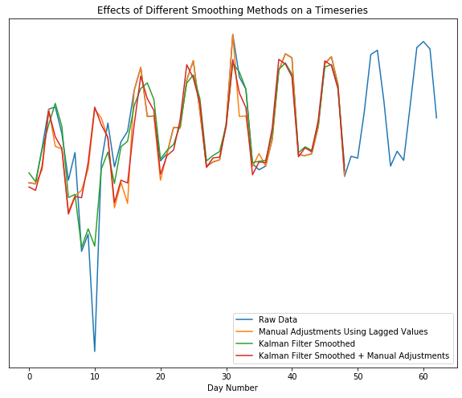
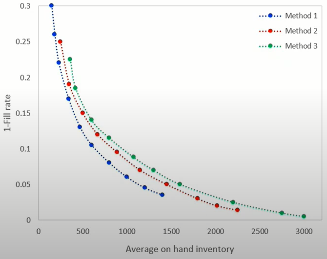
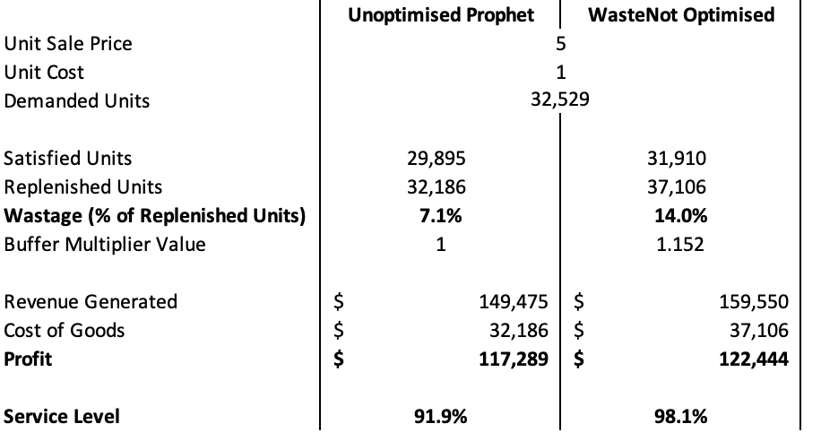
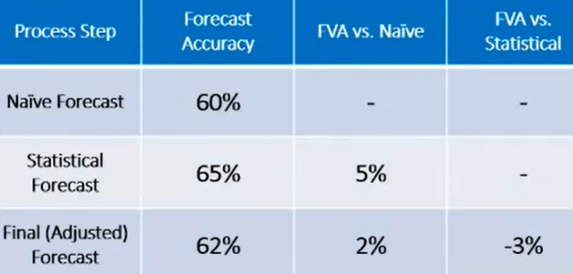
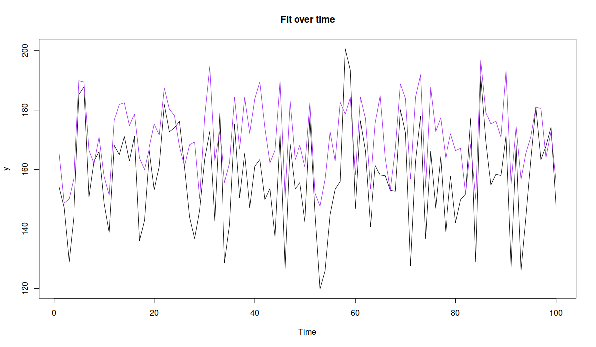
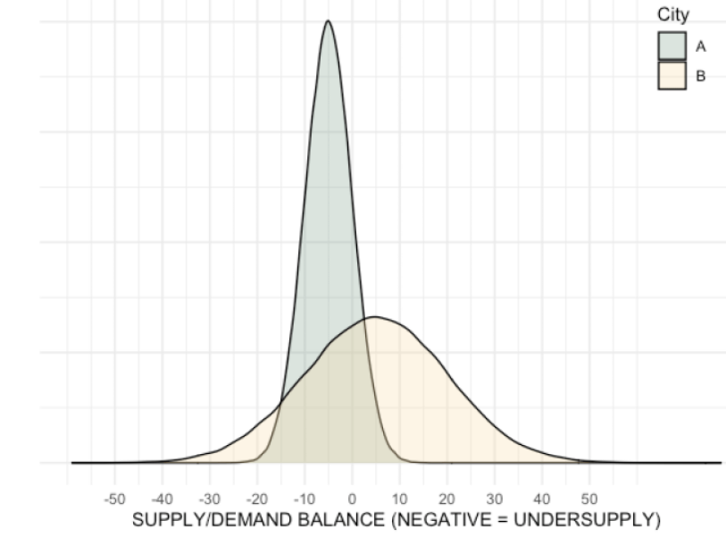

Demand Planning
Misc
- Also see
- Resources
- Used in Sales & Operations Planning (S&OP) process where the forecasts generated in this stage trickle down to other stages including supply planning, production scheduling, logistics planning, and inventory optimization.
- Over-Forecasting can lead to excess working capital being tied up in inventory.
- Under-Forecasting can stock out customers or lead to a scramble to make orders using more expensive raw materials and ship on short notice with more expensive transportation
- Challenges
- Changes in the business environment — for instance, substitutes may replace a product, driving its demand down. Alternatively, new applications for a product may cause demand to go up compared to historical trends.
- Shifts in business model — an organization may change its operating model and business strategy. For example, a chemical company may choose to shift their business from commodity chemicals to more specialty products, and so the historical demand patterns may not hold anymore.
- Data availability — historical sales data, customer and product hierarchy data, and real-time orders data may be stored on disparate systems.
- Data quality — this may include issues such as inaccurate data due to entry errors or data being captured at different and inconsistent granularity across data elements.
- Prepare forecasts for alternate scenarios
- Talk with someone on the business side and ask about the potential scenarios within the forecast horizon that could affect the forecast.
- Examples: a 10% inflation spike, supply disruption of a crucial raw material, a natural disaster, etc.
- Rank these scenarios and factors in order of importance, so that you can prioritize.
- Horizons (Typical)
- Short-Term: 1 - 3 months
- Mid-Term: 6 - 18 months
- Long-Term: 3 - 5 years
Article Notes
Applying Prediction Adjustment to Demand Forecasts
- Misc
- Notes from Are Your Demand Forecasts Hurting Profits and Service Levels
- Blue Dot Thinking’s WasteNot API service ($) WasteNot (logistics analytics firm) uses prophet for demand forecasting which consistently under-predicts, so they use an adjustment for better forecasts
- Prediction Adjustment - (e.g. for perishables) Calculate an optimal “Buffer Multiplier” value — each predicted value from the statistical forecast is multiplied by the multiplier, resulting in a higher number of units replenished each day
- Variables used:
- Unit Sale Price/Unit Cost
- Historical Variability
- Shelf-Life (seconds)
- Stock Levels
- They didn’t show the formula, but I’m guessing their modeling residuals with these variables.
- Variables used:
Case Study: Automating Stock Replenishment
- Misc
- Notes from Case Study: Applying a Data Science Process Model to a Real-World Scenario
- A VERY detailed article that goes through a scenario of step-by-step planning and execution of changing a manual stock replenishment process to an automated one
- As a guide, they use DASC-PM (DAta SCience - Process Model) - a structured and scientific process for project management
- Determine Feasibility
- Project manager tries to examine whether the project can fundamentally be classified as feasible and whether the requirements can be carried out with the available resources.
- Expert Interviews: Is the problem in general is very well suited for the deployment of data science and are there corresponding projects that have already been undertaken externally and also published?
- Data science team: Are there a sufficient number of potentially suitable methods for this project and are the required data sources are available?
- IT department: check the available infrastructure and the expertise of the involved employees.
- Demand Forecasting Model
- Requirements:
- Accuracy of 75%. This means that the forecasts for quantities of each product should deviate from actual requirements by no more than 25%.
- Produce monthly planning cycles and quantify the need for short-term and long-term materials
- Data sources: order histories, inventory and sales figures for customers, and internal advertising plans
- Features: seasonality, trends, and market developments
- Forecasts regenerated every month
- Requirements:
- Load Forecasts into Internal Planning Software
- Projections will be analyzed and, if need be, supplemented or corrected.
- Planners can make their corrections during the first four working days of the month.
- The final planning quantity will ultimately be used by the factories for production planning.
- Example: IBM Planning Analytics
- Allows for the creation of flexible views where the users can personally choose their context (time reference, product groups, etc.)and adjust calculations in real-time.
- Sounds like expensive optimization software with a snazzy UI
- Final plans are loaded into the Data Lake after processing by the planning teams so they can be referenced in the future.
- Projections will be analyzed and, if need be, supplemented or corrected.
- User Integration
- Users are included in the development from the beginning to ensure technical correctness and relevance and to ensure familiarity with the solution before the end of the development phase.
- Simple line and bar charts for processes and benchmarks are used, along with tables reduced to what is most important.
- Planners get training sessions to help them interpret the forecasts and classify their quality.
- Complete documentation is drafted
- Technical part: data structures and connections
- Content part: jointly prepared with the users to describe the usage of the data product
- Post-Development Phase
- i.e. Maintenance of the project
- Constant automated adjustment of the prediction model to new data
- Various parameters such as the forecast horizon or threshold values for the accuracy of the prediction can be made by the planners
- Problems occurring after the release of the first version are entered via the IT ticket system and assigned to the data science area
- At regular intervals, it is also checked whether the model still satisfies the expectations of the company or whether changes are necessary.
Dealing with Shocks
- Misc
- Forecasting shocks is difficult for an algorithm
- Also see Forecasting, Deep Learning >> Misc >> Predictive Adjustment
- Notes from Why Good Forecasts Treat Human Input as Part of the Model
- Preprocessing
- It can be better to smooth out (expected) shocks in the training data and then add an adjustment to the predictions during the dates of the shocks.
- The smoothed out data will help the algorithm produce more accurate predictions for days when there isn’t an expected shock.
- e.g. Kalman filter with parameters for seasonality, trends from {{tsmoothie}}
- Nothing special about this smoother. Probably just the method in tsmoothie that performed best for them (which is a good reason to use it).
- e.g. Kalman filter with parameters for seasonality, trends from {{tsmoothie}}
- Approaches for manually replacing oulier values
- Replace the outlier week with the most recent week prior to the dip as a proxy for what should have happened.
- Use domain knowledge
- e.g. Marketing departiment is expecting 10% growth the week after it’s new promotion
- Replace with one of the previous methods, then apply a smoothing algorithm
- Shows the Kalman filter by itself fails to replace the outlier dip with the normal, expected peak, but the manual adjustment + Kalman gives us what we want
- Examples of shocks that may need training data to have manual adjustments and not be smoothed by an algorithm
- One-time spikes due to abnormal weather conditions
- One-off promotions
- Replace the outlier week with the most recent week prior to the dip as a proxy for what should have happened.
- A sustained marketing campaign that is indistinguishable from organic growth.
- Prediction Adjustment
- Extreme events (i.e. unprecedented promotions or weather), where the expected impact is well outside of any historical data, may prove impossible for forecasting methods to produce an adequate forecast
- Since it’s outside the range of historical data, building a more complex model or just including weather or promotional features won’t help.
- Requires using domain expertise of the event to use to adjust the predictions
- Make sure to build-out the code infrastructure so that each manual adjustment should just feel like adding another input to the model.
- Extreme events (i.e. unprecedented promotions or weather), where the expected impact is well outside of any historical data, may prove impossible for forecasting methods to produce an adequate forecast
{kind=link}
Stakeholder Questions
- Misc
- Questions for the stakeholder before starting a forecasting project.
- For the most part, the questions with bold terms are ones that I consider essential for producing a valuable forecasting model.
- The other questions might be optional depending on your role.
- i.e. Unless you’re asked to review the overall decision making process and offer recommendations, the questions surrounding the decision-making process are not strictly necessary for producing a forecasting model.
- Notes from: An Inquisitive Journey into Forecasting
- Questions for the stakeholder before starting a forecasting project.
- Decisions and Actions
- What decisions is the forecast going to support? (e.g. plan for manufacturing, set inventory target, allocate marketing budget?) How are they made currently? Is there a clear and stable decision process?
- A “clear and stable decision process” would mean that the decision-making process ,for which the forecast is an input, is the same each and every time a decision is made.
- e.g. Adjusting a forecast based on vibes or politics or casually adding or removing other inputs to the decision-making process would not be stable
- Who are the key decision-makers? What does the decision process look like? Are there stakeholders who should have been involved but were left out?
- What are the subsequent actions related to the decision? Who carries them out? How do people manage and carry out these actions in their day-to-day business? How well do actions adhere to decisions?
- How often is the decision made? Is it the right frequency for the actions? (too frequent then it disrupts day-to-day business; too infrequent then we are slow to react to crucial trends and events)
- e.g. Should the predicted values be weekly, monthly, quarterly, etc.?
- How much further into the future do people anticipate when making decisions? (i.e. the forecast horizon) Is it the right horizon for the actions? (too short then business will be forever in reactive mode, too long then forecasting team will just waste their energy on useless reports)
- At which granularity do people make decisions? At which granularity do people take actions? Are they the same? If not, how do people bridge the gap to carry out their day-to-day business?
- i.e. Is there hierarchical or group aspect to the forecast?
- What are the decisions and actions closely related to this one? Are those decisions providing input, constraints to the current one, or does the forecast enable them?
- From a process perspective, how do they ensure that targets and forecasts are not interfering with each other? Is there a clear distinction between targets and forecasts in the company?
- I think this one is asking if the forecasts get fudged to get inline with sales targets (?) which goes back to first question about a stable decision-making process.
- What decisions is the forecast going to support? (e.g. plan for manufacturing, set inventory target, allocate marketing budget?) How are they made currently? Is there a clear and stable decision process?
- Value
- Also see Metrics for details on drilling down into this subject
- How is the variable being forecasted related to the company’s OKRs/KPIs?
- What value can a good decision bring about and what’s the cost of a bad decision? Can I make a dollar estimation of the impact? What would be a reasonable way to make this estimation, and what are the assumptions behind it?
- Using the framework of value estimation established in the previous question, can I connect the metrics of forecast quality (e.g. accuracy, bias) to a dollar impact? What would be a reasonable level of impact to sponsor the upgrade / rebuild of the forecast model? How much model improvement would that entail?
- Can I improve / refine the decision-making process without improving the forecast model? If so, how big is the value impact?
- Are there any non-financial benefits, e.g. time and efficiency? Better adoption of data-driven decision making and higher trust in data and forecast? Internal capability building which paves the way for future technologies?
- The time and efficiency in generating forecasts for the old forecasting model/process can be used as inputs in determining the overall ROI of your model.
- Does the 80/20 rule apply to the value impact somewhere? For example, the majority of the value can come from a rather restricted scope of products, business lines, distribution channels, geographies and decisions.
- If you’re creating a model with hierarchical or group data and for example, some products are more important for generating profit for the company than others, then the models forecasting those products best take priority in any sort of model selection process.
- Drivers and Proxies - While causal variables are good predictors (assuming they’re leading indicators), using only causal variables as predictors isn’t necessarily important to produce accurate predictions, but they are important for determining which levers can be adjusted by stakeholders in order to increase or decrease the future values of the forecast variable (e.g. sales). Use the answers to these questions to create a DAG. Then, models can be fit to measure their effects.
- What are the key factors which impact the forecast target? (e.g. for demand, it could be price, promotion, marketing, channel distribution, etc.)
- What is the mechanism between those factors and the forecast target? Can we establish causal links either through common sense or industry expertise?
- Among those factors, which are the causal drivers and which are barely correlated?
- What are the factors that we, as an organization, can control? (e.g. price and promotion)
- What are the factors that we cannot control but we can observe?
- What are the factors that are neither controllable nor observable, but we know they have an important impact on demand?
- These will require proxy variables. (Also see Causal Inference >> Misc >> Partial Identification)
- What are the factors that influence the forecast target with a delay (i.e. forward-looking indicators / signals), and how long is the lead time?
- How do people make forecasts currently? Do they use any of those factors and their relations to help them make the forecast? Is there a data-driven model in place?
- Data
- Do we have historical data for all the above-mentioned factors? How much history do we have for each factor? If direct data is not available, is it possible to find good proxies from public data sources or through data acquisition?
- Can we obtain forward-looking indicators for the forecast target from sources like research organizations, public data, or internal resources (such as pricing and promotions)? Additionally, how far into the future do these data provide insights?
- Where do these data (historical & forward-looking) come from? Are they generated internally from an ERP system, inputted manually by staff, or obtained from external data providers?
- Is there a data cleaning process (ETL) that is used to prepare the data we have? How does it work? What are the main functions that it performs? Would this process mask key information that we want to get from the data? If that’s the case, is it possible to obtain the raw data?
- What’s the granularity of those data? Is it as granular as the decisions? How often do those data get updated? Is it updated frequently enough for the decision process?
- Do we have multiple sources for the same factor? If so, what are the key differences? Do different business units and teams use different sources or versions? What’s the reason behind it?
- Does the data cover all products / business units? If not, what’s the reason for the low coverage? Can we calculate the percentage of the value pool which have proper data coverage? Does that look big enough? If not, can we think of ways to improve it?
- “Value pool” refers the profits of the company and if there is sufficient data collection on the products that create the most value for the company.
- What’s a normal range for key business data and KPIs (e.g. accuracy, bias)? How do business people generally account for the fluctuation of those metrics?
- Draw Conclusions from the Answers
- Do I know what this forecast is built for, what’s the value? Where and how do we generate value? How is it linked to the forecast quality?
- How can the forecast be designed (frequency, horizon, granularity, scope) to assist and guide the process? How do decision-makers and operational staff interact with the forecast? Does that make sense?
- Do I fully understand how my forecast target is generated? What do the list of drivers, causal graph, and influence lag imply about my modeling? Does that fit well with the process?
- Do I have enough & good-quality data to build the first model? What might go wrong with the data, how to fix it (if possible)? How can we improve data quality, availability over time (how long would that be)?
Intermittent Demand
Misc
- Notes from
- CMAF FFT: Intermittent Demand Forecasting (Video)
- From authors of “Intermittent Demand Forecasting. Context, Methods and Applications” (see your book shelf)
- CMAF FFT: Intermittent Demand Forecasting (Video)
- Preferrable to avoid intermittence by aggregating data to a category that’s higher in the product hierarchy or lengthen the frequency.
- Not always possible. For example, different SKUs have different lead times, so aggregating products into categories with the same protection intervals can be complicated.
- Protection Interval is your horizon, which equals the length of the review period + length of the lead time
- See Order-Up-To (OUT) Level Policy for details
Compound Distributions
- Target
- Incidence/occurrence (of Demand): Poisson and Bernoulli
- Discrete positive Demand interspersed with zeros: Neg. Binomial
- Sounds like zero-inflated, censored distribution
- Options
- Discrete Compound Poisson (aka Stuttering Poisson): Poisson + Geometric
- Negative Binomial: Poisson + Logarithmic
- Lumpy data
- Data that’s intermittent and has extreme variability in demand sizes
- Negative Binomial built to handle this type of data
Forecasting Mean Demand
- Parametric
- Modeling
- Exponential Smoothing
- Popular method but bad for intermittent forecasting
- Biased on “issue points” (see video for more details)
- iETS
Captures multiplicative seasonality in data that has zeroes (as long as seasonal indices can be estimated somehow)
ADAM ebook chapter, post, real world use case on adding an occurrence variable to an ETS model to handle intermittent data
- The use case paper also includes a GAMLSS with truncated Normal distribution model with code that performed well
- Uses {probcast} which has functions around gams, gamlss, and boosted gamlss models from {mgcv}, {mboost}, {gamlss}, etc.
- The use case paper also includes a GAMLSS with truncated Normal distribution model with code that performed well
Example: From iETS: State space model for intermittent demand forecasting
Model
set.seed(7) y <- c(rpois(10,3),rpois(10,2),rpois(10,1),rpois(10,0.5),rpois(10,0.1)) |> ts(frequency=12) library(smooth) iETSModel <- adam(y, "YYN", occurrence="direct", h=5, holdout=TRUE)- model = “YYN”: Tells function to select the best pure multiplicative ETS model based on the information criterion
- AICc used by default, see discussion in Section 15.1 of the ADAM book
- occurrence = “direct”: Specifies which of the demand occurrence models to build.
- “direct” by default, the function will use the same model for the demand probability as the selected for the demand sizes.
- So, for example, if we end up with ETS(M,M,N) for demand sizes, the function will use ETS(M,M,N) for the probability of occurrence.
- To change this, you would need to use the
oes()to specify the model to predict the probability of occurrence- See examples in Section 13.4 of the ADAM book.
- “direct” by default, the function will use the same model for the demand probability as the selected for the demand sizes.
- h = 5: Sets the forecast horizon to 5 steps ahead
- holdout = TRUE: Says to keep the last 5 observations in the holdout sample
- model = “YYN”: Tells function to select the best pure multiplicative ETS model based on the information criterion
Results
summary(iETSModel) #> Model estimated using adam() function: iETS(MMN) #> Response variable: y #> Occurrence model type: Direct #> Distribution used in the estimation: #> Mixture of Bernoulli and Gamma #> Loss function type: likelihood; Loss function value: 71.0549 #> Coefficients: #> Estimate Std. Error Lower 2.5% Upper 97.5% #> alpha 0.1049 0.0925 0.0000 0.2903 #> beta 0.1049 0.0139 0.0767 0.1049 * #> level 4.3722 1.1801 1.9789 6.7381 * #> trend 0.9517 0.0582 0.8336 1.0685 * #> Error standard deviation: 1.0548 #> Sample size: 45 #> Number of estimated parameters: 9 #> Number of degrees of freedom: 36 #> Information criteria: #> AIC AICc BIC BICc #> 202.6527 204.1911 218.9126 206.6142- Selected the iETS(M,M,N) model
- “Mixture of Bernoulli and Gamma” tells us that the Bernoulli distribution was used for the demand occurrence (this is the only option), while the Gamma distribution was used for the demand sizes (this is the default option, but you can change this via the distribution argument).
Demand Forecast
forecast(iETSModel, h=5, interval="prediction", side="upper") |> plot()- side = “upper”: Says we only want the upper prediction interval
- For pure multiplicative models, simulations are used.
- Since the lowest bound is zero, the upper bound is what’s useful for stocking decisions
- side = “upper”: Says we only want the upper prediction interval
Occurence Forecast (i.e. Stock or Not)
forecast(iETSModel$occurrence, h=5) |> plot()- Probability reaches roughly 0.2 over the next 5 months (i.e. we might sale once every 5 months).
- If we think that this is too low then we should discontinue the product. Otherwise, if we decide to continue selling the product, then it makes more sense to generate the desired quantile of the cumulative demand over the lead time.
Cumulative Demand Forecast
forecast(iETSModel, h=5, interval="prediction", side="upper", cumulative=TRUE) #> Point forecast Upper bound (95%) #> Oct 4 0.3055742 1.208207- Based on the estimated model, we need to have two items in stock to satisfy the demand over the next 5 months with the confidence level of 95%.
- Exponential Smoothing
- Methods
- Since these are methods they can’t incorporate predictive variables or produce prediction intervals
- Croston Method
- Inversion Bias: we believe the mean demand is higher than predicted
- SBA (Syntetos-Boylan Approximation)
- Recommended method
- Corrects Croston bias
- Supported by empirical evidence
- Temporal Aggregation: Overlapping vs Non-Overlapping
- self-improving mechanism
- See video for details (although it wasn’t discussed in great detail)
- Modeling
- Non-Parametric (aka Empirical)
- Bootstrapping
- Resample in blocks or resample independently
- Independently is how you normally see bootstrapping
- With blocks, bin your sequential data into non-overlapping partitions and resample independently within each partition.
- Resample in blocks or resample independently
- Bootstrapping
{kind=link}
{kind=link}
Forecasting Demand Variance
- Using the variance of the forecast error of the protection interval to estimate the variance of demand over the protection interval
- Classical method is to calculate the variance of the errors over each review period and aggregate to the get the variance over the protection interval, but the above method is better empirically and theoretically
Diagnostics
- Also see
- Do NOT use metrics based on absolute errors (e.g MASE, MAPE) by themselves
- Minimization of these metrics, by themselves, can result (i.e. over half of your values are zeros) in always recommending 0 value forecasts
- Can be used in conjunction with bias correction measures
- Scaled Mean Squared Error
- Relative Root Mean Squared Error
- Look at the predictive distributions instead of just the point forecasts
- Accuracy Implication Metrics - Measure the effect of the forecast on inventory
- Y Axis: 1 - Fill_Rate; X Axis: Average on-hand inventory
- Each method is a forecasting model
- Think the Fill Rate is estimated from a simulation using the method’s forecast and a range of average SOH values as parameters
.png){kind=link}
Metrics
- See
- Demand Forecasting >> Intermittent Demand >> Diagnostics >> Accuracy Implication Metrics
- Decision Impact Metrics
- Process
- Discuss with your manager and team the purpose of the demand forecast. Is its goal to set accurate sales targets? To lower inventory levels? What are the underlying concerns behind these forecast numbers?
- If increasing sales is the top concern, then maybe adjusting the forcast towards the higher end of the prediction interval is better. Increased inventory leads to less stockouts which leads to more sales
- If decreasing inventory is the top concern, then maybe adjusting the forcast towards the lower end of the prediction interval is better as this will lead to decreased inventory and decreased cost.
- Create a simple business case to translate forecast accuracy metrics.
- This will allow you to present your benefits of your model in business terms to a non-technical decision maker
- Example: Decreasing MASE by 50%
- Current situation:
- Existing forecasting method produces an average MASE of 20%.
- Excess inventory costs average $50,000 per month due to inaccurate forecasts.
- Stockouts lead to an average of $20,000 in lost sales per month.
- After Improving Forecast:
- By reducing MASE to 10% (decrease of 50%), the company can expect:
- Reduced excess inventory costs: Inventory costs could be reduced by $25,000 per month (50% decrease).
- Increased sales: More accurate forecasts allow for optimal stock levels, potentially leading to a $10,000 increase in monthly sales.
- By reducing MASE to 10% (decrease of 50%), the company can expect:
- Current situation:
- Diagram the decision making process
- In many cases, the decision-maker or others will make subjective adjustments to forecasts
- The diagram should include the decision being made, the inputs for the decision, who’s making the decision, and the outcomes that follow.
- Each adjustment should be documented, so as to better assess how where improvement needs to made in the process.
- Discuss with your manager and team the purpose of the demand forecast. Is its goal to set accurate sales targets? To lower inventory levels? What are the underlying concerns behind these forecast numbers?
- WasteNot method for judging its adjusted forecast model vs prophet
- Change in the Number of Stock-Out Days (lower is better)
- Percent Change in Service Level (higher is better)
- Change in Profit (higher is better)
- Change in Wastage (lower is better)
- Change in Inventory Costs (lower is better)
{kind=link}
Decision Impact Metrics
Misc
- Also see
- Metrics
- Demand Forecasting >> Intermittent Demand >> Diagnostics >> Accuracy Implication Metrics
- DI metrics for all generated forecasts can be used to calculate a quarterly, semestrial, or annual ROI for the product planning department
- ROI = sum(\(DI_{na}\))- (cost of people, tools, etc. used by department to generate forecasts)
- Probabilistic Forecasts + DI metrics
- Identify parameters (i.e. whatever value you’re forecasting) with the highest economic risk
- Economic risk is related to the size of the PI of the forecast
- Investigate potential causes for the risk and find solutions
- Example
Calculate
- \(\min(DI_a)\) - the costs associated with the forecast at the 5% percentile
- \(\max(DI_a)\) - the costs associated with the forecast at 95% percentile.
Calculate economic risk
\[ \text{risk}_{\text{econ}} = \left|\max(DI_a) - \min(DI_a)\right| \]
- Identify parameters (i.e. whatever value you’re forecasting) with the highest economic risk
Forecast Accuracy Metrics Are Flawed
- Industry benchmarks for these metrics aren’t useful. Each business regardless whether they’re in they’re in the same industry has diverse business strategies (e.g. size of portfolio, product & brand positioning)
- Constraints and business rules have to be considered and not just a forecast metric
- e.g. Allowed pack sizes, the minimum order quantity, the storage finite capacity, holding/excess costs, shortage costs, fixed costs, etc.
- Forecast Accuracy (FA) metrics are difficult to understand for normals
- Using Decision Impact (DI) metrics can help eliminate:
- “The forecast is always wrong!”, “The forecast is too this”, “The forecast is not enough that”, “What does 70% FA mean?”, “Is this good or bad?”
- Using Decision Impact (DI) metrics can help eliminate:
- Forecast Value Added (FVA)
- FVA: The change in a forecasting accuracy metric that can be attributed to a particular process or participant in the forecasting process.
- Example
- Statistical model has 5% FVA vs Naive forecast
- Adjusted Statistical Forecast has 2% FVA vs Naive Forecast
- Forecast gets manually adjusted by management
- Example
- Reasons why FVA shouldn’t be used by itself
- The difference in Forecast Accuracy (FA) metrics (e.g. MAPE) of the production forecasting algorithm and the naive forecasting algorithm is usually weighted by portfolio revenue, volume or number of items
- A FA metric is not a key business performance indicator (KPI)
- FA has little correlation with business performance.
- Therefore, improving FA does not mean you are generating value.
- Costs may increase, decrease or remain the same as accuracy changes.
- FA metrics can contradict each other
- Switching from one FA metric to another could profoundly alter your FVA results.
- FVA: The change in a forecasting accuracy metric that can be attributed to a particular process or participant in the forecasting process.
.png){kind=link}
DI Components
- Decision-based Components - components that take into account the decision being made using the forecast
- Example: One weather forecast predicts 4 inches of rain but another forecast predicts 0 inches of rain. The next day it rains 1 inch.
- If the decision being made was whether to take an umbrella, the first forecast is the best forecast even though its error is worse than the second forecast.
- Components
- Decision Function - For any forecast input, simulate the decision process and evaluate the quality of the final decision
- Decision Impact (DI) - Metric that defines how decision quality is measured
- Usually in terms of financial cost
- A “North Star” type metric
- Example: One weather forecast predicts 4 inches of rain but another forecast predicts 0 inches of rain. The next day it rains 1 inch.
- Decision Cost Function: The cost function is used to score each stock replenishment decision based on its true business impact usually in terms of financial cost
- Example: Walmart Retail Data (M5)
- The Decision Cost is the sum of following factors:
- Ordering, shipping and handling cost (Fixed Costs)
- Fulfilling an order generates costs for the ordering, preparation, expedition, transportation, etc.
- Let’s assume these costs represent $40 per $1000 of purchase value.
- Holding cost (Excess Costs)
- Holding costs are associated with the storage of unsold inventories.
- Let’s assume the annual holding cost is 10% of the inventory value (valued at purchase price), e.g. 0.19% per week.
- Shortage cost
- When demand exceeds the available inventory, both the demand and customer goodwill may be lost.
- As retailers propose a wide range of similar products, a part of the excess demand is carried on to other products.
- Let’s assume that only half of the sales will effectively be lost. The shortage cost could then be measured as 50% of each lost sale gross margin.
- Ordering, shipping and handling cost (Fixed Costs)
- The Decision Cost is the sum of following factors:
- Other Considerations
- Replenishment Strategy
- Leadtime
- Order Cycle
- Replenishment Policy
- Safety Stock
- Additional Product Information
- Gross Margin
- Pack Sizes
- Initial Inventory
- Example: Using the safety stock value
- Computational Costs
- Algorithm training time
- Compute size
- Data pipeline
- Replenishment Strategy
- Example: Walmart Retail Data (M5)
- Required Forecasts
- “Actual” Forecast: Forecast from a candidate model that will potentially go into production
- “Naive” Forecast: Forecast from a simple method (e.g. seasonal-naive, simple moving average, etc.) or a previous used method
Steps
- Decide how best to measure the Decision Impact as related to the forecast
- e.g. Financial Cost
- Formulate a decision cost function
- e.g. Fixed Costs + Holding Costs + Shortage Costs (See Walmart example above)
- Generate forecasts on a test/assessment set.
- Calculate Decision Impact Costs
- Actual Cost (\(DI_a\)): Cost after applying the decision cost function to the “actual” forecast (See above)
- Naive Cost (\(DI_n\)): Cost after applying the decision cost function to the “naive” forecast (see above)
- Oracle Cost (\(DI_o\)): Cost after applying the decision cost function to the observed values
- This would be the costs of a forecast in which we had perfect knowledge. (So probably just Fixed Costs)
- Calculate Decision Impact metrics:
Earned Value (aka Forecast Value Added) (\(DI_{na}\))
\[ DI_{na} = DI_n - DI_a \]
Unearned Value (aka Yet-To-Be-Earned Value)(\(DI_{ao}\))
\[ DI_{ao} = DI_a -DI_o \]
- The value that could still be gained by improving forecasts
Total Earnable Value (\(DI_{no}\))
\[ DI_{no} = DI_n - DI_o \]
- The range of earnable value
Proportion of the Earned Value
\[ \frac{DI_{na}}{DI_{no}} \]
Proportion of Yet-To-Be-Earned value
\[ \frac{DI_{ao}}{DI_{no}} \]
Profit Functions for Perishable Products
The newsvendor problem is a class of problems, where the product can only be sold one day, after which it goes to waste. So this is appropriate, for example, for perishable products in retail
Notes from An Integrated Method for Estimation and Optimisation; associated paper
If we order more than needed, we will have holding costs. In the opposite case, we will have shortage costs.
- Based on these costs and the price of product, we can find the optimal amount of product to order, that will give the maximum profit.
Instead of a two-stage problem (see DoorDash section): Optimising the forecast model via MSE or any other conventional loss and then solving the optimisation problem, we could estimate the model via maximization of the specific profit function, thus obtaining the required number of product orders directly.
Calculate profit as a linear function
\[ \pi(q_t,y_t) = \left\{ \begin{array}{lcl} py_t - vq_t - c_h(q_t - y_t) & \text{for}\;\; q_t \geq y_t \\ pq_t - vq_t - c_s(y_t-q_t) & \text{for}\;\; q_t < y_t \end{array}\right. \]
- \(y_t\): Actual Sales
- \(p\): Price of the Product
- \(q_t\): Order Quantity
- \(v\): Cost of Production
- \(c_h\): Holding Cost
- \(c_s\): Shortage Cost
Example
library(greybox) # Generate artificial data x1 <- rnorm(100,100,10) x2 <- rbinom(100,2,0.05) y <- 10 + 1.5*x1 + 5*x2 + rnorm(100,0,10) ourData <- cbind(y=y,x1=x1,x2=x2) # Define price and costs price <- 50 costBasic <- 5 costShort <- 15 costHold <- 1 # Define profit function for the linear case lossProfit <- function(actual, fitted, B, xreg){ # Minus sign is needed here, because we need to minimise the loss profit <- -ifelse(actual >= fitted, (price - costBasic) * fitted - costShort * (actual - fitted), price * actual - costBasic * fitted - costHold * (fitted - actual)); return(sum(profit)); } # Estimate the model model1 <- alm(y~x1+x2, ourData, loss=lossProfit) # Print summary of the model summary(model1, bootstrap=TRUE) Coefficients: Estimate Std. Error Lower 2.5% Upper 97.5% (Intercept) 36.5177 14.2840 2.7783 51.4844 * x1 1.3622 0.1622 1.1909 1.7528 * x2 3.3423 2.7810 -6.5997 5.9101Interpretation: With the increase of the variable x1, the orders should change on average by 1.36
Plot
plot(model1, 7)- Figure above corresponds to the orders (purple) and would cover roughly 90.91% of cases (black), so that we would run out of product in approximately 10% of cases, which would still be more profitable than any other option.
Nonlinear case
- See link to associated paper above
- The only thing that would change is the loss function, where the prices and costs would depend non-linearly on the order quantity and sales.
{kind=link}
Case Study: DoorDash
- Notes from https://towardsdatascience.com/managing-supply-and-demand-balance-through-machine-learning-70d4f0808617
- Problem Definition
- Supply and demand imbalance (i.e. drivers and food orders)
- Effects
- For consumers, a lack of driver availability during peak demand is more likely to lead to order lateness, longer delivery times, or inability to request a delivery and having to opt for pick up.
- For Dashers, a lack of orders leads to lower earnings and longer and more frequent shifts in order to hit personal goals.
- For merchants, undersupply leads to delayed deliveries, which typically results in cold food and a decreased reorder rate.
- 2-Stage Solution
- Forecast supply and demand
- Optimize supply of workers with demand of food orders
- Optimization Strategies
- Balancing at the delivery level means every order has a Dasher available at the most optimal time
- Consumer preferences and other changing conditions in the environment, such as traffic and weather, make it difficult to balance supply and demand at the delivery level
- Balancing at the market level means there are relatively equal numbers of Dashers and orders in a market but there are not necessarily optimal conditions for each of these groups at the delivery level.
- Balancing at the delivery level means every order has a Dasher available at the most optimal time
- Optimization Strategies
- Metrics
- Number of hours required to make deliveries during a time period
- Optimize keeping delivery durations low and Dasher (drivers) busy-ness high
- Able to account for regional variation driven by traffic conditions, batching rates, and food preparation times.
- Units: hourly or parts-of-day (e.g. breakfast, lunch, dinner)
- There’s too much variation during a day in order to aggregate to a higher level metric. Demand and supply would be artifically smoothed.
- Example:
- Sunday at dinner time in New York City, and we estimate that 1,000 driver hours are needed to fulfill the expected demand. We might also estimate that unless we provide extra incentives, only 800 hours will likely be provided organically. Without mobilization actions we would be undersupplied by about 200 hours.
- Optimization
- Adjust supply of drivers by incentivizing with pay bonues during high demand hours
- Number of hours required to make deliveries during a time period
- Forecast Supply and Demand
- Demand
- LightGBM
- Predictors
- Information about population size, general traffic conditions, number of available merchants, climate, and geography
- Character variables were replaced with embedding vectors
- Supply
- Counterfactual to understand how to make tradeoffs between supply and costs
- How will supply levels change if we changed incentive levels so that we can ?
- I assume “incentive_level” is a variable in the supply forecast model, so this could just be adjusted in “newdata” and a prediction (or maybe during a training session?) made to see the effects on supply.
- Counterfactual to understand how to make tradeoffs between supply and costs
- Demand
- Optimization
- Input supply and demand predictions and generate a set of optimal actions
- Mixed-Integer Programming (MIP)
- Also see Optimization, Equation Systems
- Linear Optimization ({ompr})
- Easy to formalize, implement, and explain to stakeholders
- Custom objective function for minimizing undersupply with several constraints.
- Can be configured to favor either profitability (profit per customer?) or growth (increase in orders per customer?)
- Or maybe its about drivers — profitability (just enough incentive to get just enough drivers?) or growth (not sure what the “driver” angle is here)
- Constraints
- Never allocate more than one incentive in a particular region-time unit.
- Never exceed the maximum allowable budget set by our finance and operations partners.
- Regional
- Different budgets, custom penalties, exclusion criteria for which units should not be included in the optimization, or incentive constraints that are guided by variability of the inputs.
- Can be configured to favor either profitability (profit per customer?) or growth (increase in orders per customer?)
- Optimizer must account for uncertainty
- City B’s forecast distribution has substantial uncertainty, and it’s mean says it will have enough drivers (i.e. oversupply)
- City A’s forecast distribution is more certain, and it’s more likely to be undersupplied.
- W/o taking uncertainty into account, the optimizer will not take into account that there’s a sizeable chance B will be undersupplied
- Taking uncertainty into account sometimes causes an over-allocation of resources to these uncertain regions (small areas, fewer orders, fewer drivers, larger variance)
- They do something with resampling to solve this but I didn’t quite understand it.
.png){kind=link}